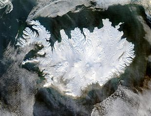
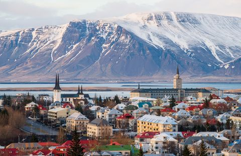
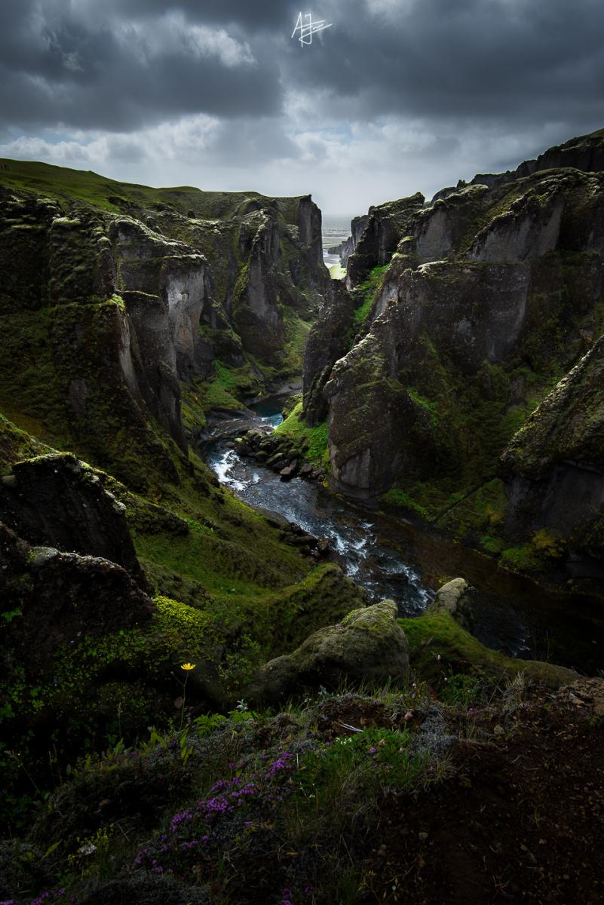

La miglior risoluzione per usare il sito è 1024×768 oppure se non vedi bene premi Ctrl- o Ctrl+
L'Islanda (in islandese Ìsland ['istlant]) è una nazione insulare dell'Europa settentrionale.
È situata nell'Oceano Atlantico settentrionale, tra la Groenlandia e la Gran Bretagna, a nord–ovest delle Isole Fær Øer.
Collocata sulla dorsale medio atlantica, l'Islanda presenta un'attività vulcanica e geotermica rilevante, che ne caratterizza fortemente il paesaggio.
L'interno è costituito principalmente da un altopiano desertico, da montagne e da ghiacciai.
Sono presenti, inoltre, trenta vulcani attivi e sono molto diffuse le manifestazioni vulcaniche secondarie:
• sorgenti termali
• fumarole
• geyser
Cosa sono i geyser?
Sono fenomeni dovuti a precipitazioni che si infiltrano nella crosta terrestre, che acquistando calore dalle pietre o dal magma
risalgono in superficie sotto forma di sorgenti di vapore acqueo.
Questi getti di acqua calda alti decine di metri sono sfuttati per la produzione di energia elettrica e per il riscaldamento delle case.

Data l'abbondanza dei ghiacciai, sono molti i fiumi alimentati dall'acqua derivante dallo scioglimento del ghiaccio nella stagione estiva.
I corsi d'acqua hanno portate abbondanti, formano cascate suggestive seguendo i dilivelli del terreno e sono ricchi di salmoni.
I fiumi islandesi sono in parte molto noti, ma nessuno di essi è navigabile.
Numerosi sono i laghi che occupano antichi crateri vulcanici e molteplici sono i fiordi, meravigliose insenature in cui si insinua il mare.
L'isola possiede un clima temperato, relativamente alla sua latitudine, grazie alla Corrente del Golfo che ne consente una buona abitabilità.
La combinazione di questi elementi naturali rende la "Terra dei ghiacci" la perfetta meta di un viaggio indimenticabile.
L'unico centro abitato dell'Islanda che possa definirsi città è Reykjavík, la capitale, in cui risiede quasi il 40% della popolazione.
Oltre che sede politica e amministrativa è anche il principale centro industriale, possiede un porto e un aeroporto.
La qualità della vita è piuttosto alta, così come il reddito pro capite, che è anzi tra i più elevati del continente.
Le altre "città" principali si trovano, inevitabilmente, tutte lungo la costa.
Sono presenti nel Paese alcune realtà produttive di eccellenza in settori ad alta tecnologia: ad esempio le famose protesi
in fibra di carbonio del corridore Oscar Pistorius sono prodotte da un'azienda islandese, la Össur.
L'Islanda fu la prima nazione a riconoscere internazionalmente l'indipendenza delle repubbliche baltiche.
Nel 2011 l'Islanda fu altresì tra i primi Stati europei a riconoscere ufficialmente lo Stato di Palestina.
Il parlamento, il 16 luglio 2010, ha approvato una legge che garantisce a pieno la libertà di espressione.
In particolar modo, viene garantita l'impunità a chiunque pubblichi su internet informazioni riservate militari, giudiziarie o societarie. La medesima norma tutela anche chi viola un segreto di Stato.
L'Islanda, pertanto, non potrà dare esecuzione ad alcuna rogatoria estera volta ad oscurare un sito internet islandese contenente tali informazioni.
Inoltre, tra il 2017 e il 2018, l'Islanda, primo paese al mondo, ha reso obbligatoria, per legge, la parità di stipendio tra uomo e donna. 
